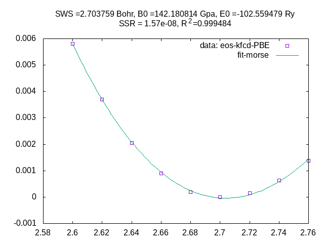

EMTO best practices workshop
Prerequisites
In case people would like to do some practices during the workshop with the installed emto excutables you need to have access to one of these resource:
Leonardo booster (CINECA, Italy).
Tetralith (NSC, NAISS, Sweden).
All documented commands for the practices are tested on these clusters.
Who is the course for?
This course is for students, researchers, engineers who would like to get started with EMTO code using a HPC resource. Basic knowledge of electronic structure theory and/or DFT calculations and using Linux will be required.
Schedule
Time |
Content |
|---|---|
10:00-10:30 |
Introduction to ENCCS |
10:30-12:00 |
EMTO lectures |
12:00-13:00 |
Lunch break |
13:00-15:00 |
Hands-on session (guided) |
15:00-17:00 |
Hands-on session |
About the course
quick setup for this workshop
module use /proj/vasp-ws2024/emto_ws/emto/modules
ml emtoworkshop
usereservation emtoworkshop-2024-04-16
copy exercise to your own place (e.g home)
cp -r /proj/vasp-ws2024/emto_ws/exercise ~/
module use /leonardo_scratch/fast/EUHPC_TD02_030/emto_ws2024/modules
ml emtoworkshop
copy exercise to your own place (e.g home)
cp -r /leonardo_scratch/fast/EUHPC_TD02_030/emto_ws2024/exercise ~/
optional settings:
export SQUEUE_FORMAT="%.15i %.8u %.15a %.15j %.3t %.10M %.10L %.5D %.4C %.10Q %16R %P"
alias sinfo='sinfo -o "%10D %20F %P"'
alias all-myjobs='squeue --me'
EMTO leture
The EMTO Method Fundamentals, Implementation and Demonstration
Basic About How to Run EMTO Code
exe |
function |
|---|---|
bmdl |
Calculates the Madelung potentials |
kstr |
Computes the energy dependent slope matrix in real space. |
shape |
Computes the so called shape function, which transforms any integral over the unit cell into an integral over a sphere surrounding the unit cell. |
kgrn_cpa |
Solves the actual self-consistent Kohn-Sham equations And calculate the Full charge density |
kfcd_cpa |
Evaluate the total energy functional from the full charge density generated by kgrn |
Running dependence of EMTO subprograms
{kind=link}
Commands to run the code looks like:
exe < input
exercise/00
tree 00
00
├── bmdl
│ └── fcc.dat
├── kfcd
│ └── cu.dat
├── kgrn
│ └── cu.dat
├── kstr
│ └── fcc.dat
└── shape
└── fcc.dat
6 directories, 5 files
please try to run these “dat” file as input for each “exe” inside its folder. for example:
cd 00/bmdl bmdl < fcc.dat
there will be errors, so what should we do ?
Hint
mkdir mdl bmdl < fcc.dat
Caution
EMTO input files have very strict format, an extra space may cause some problems.
KSTR
1KSTR HP......=N 22 Jan 08
2JOBNAM...=fcc MSGL.= 0 MODE...=B STORE..=Y HIGH...=Y
3DIR001=smx/
4DIR006=./
5Slope matrices, fcc (spdf), (kappa*w)^2= 0.0
6NL.....= 4 NLH...=11 NLW...= 9 NDER..= 6 ITRANS= 3 NPRN..= 0
7(K*W)^2..= 0.000000 DMAX....= 1.7000 RWATS...= 0.10
8NQ3...= 1 LAT...= 2 IPRIM.= 0 NGHBP.=13 NQR2..= 0
9A........= 1.0000000 B.......= 1.0000000 C.......= 1.0000000
10BSX......= 0.5000000 BSY.....= 0.5000000 BSZ.....= 0.0000000
11BSX......= 0.0000000 BSY.....= 0.5000000 BSZ.....= 0.5000000
12BSX......= 0.5000000 BSY.....= 0.0000000 BSZ.....= 0.5000000
13QX(IQ)...= 0.0000000 QY......= 0.0000000 QZ......= 0.0000000
14a/w(IQ)..= 0.70 0.70 0.70 0.70
15LAMDA....= 2.5000 AMAX....= 4.5000 BMAX....= 4.5000
A part of the input file of kstr describes the lattice informations:
Total number of sites is set by NQ3.
The symmetry is set by
LAT, more in the online manual.The lattice parameters are renormalized to the length of first lattice vector A (
A=1).Cartesian Coordinates are used for sites/”atom” with
QX,QY,QZ.
Commands for run the kstr:
kstr < fcc.dat
Or add time in front to have a feeling about the how much time each code consumes:
time kstr < fcc.dat
DIR006=./andJOBNAM...=fcc: a filefcc.prnwill be generated in the current directory.DIR001=smx: “slop matrix” will save tosmx/fcc.tfh.MSGL.= 0could silence the screen printing.
BMDL
1BMDL HP......=N 22 Jan 08
2JOBNAM...=fcc MSGL.= 1 NPRN.= 0
3DIR001=mdl/
4DIR006=
5Madelung potential for fcc bulk
6NL.....= 7
7LAMDA....= 2.50 AMAX....= 4.50 BMAX....= 4.50
8NQ....= 1 LAT...= 2 IPRIM.= 0 NQR2..= 0
9A........= 1.0000000 B.......= 1.0000000 C.......= 1.0000000
10BSX......= 0.5000000 BSY.....= 0.5000000 BSZ.....= 0.0000000
11BSX......= 0.0000000 BSY.....= 0.5000000 BSZ.....= 0.5000000
12BSX......= 0.5000000 BSY.....= 0.0000000 BSZ.....= 0.5000000
13QX(IQ)...= 0.0000000 QY......= 0.0000000 QZ......= 0.0000000
The Lattice information must be consistent with kstr, and the output files will be ./fcc.prn and mdl/fcc.mdl
SHAPE
The input file (shape/fcc.dat) for bmdl contains similar lattice information as kstr:
1SHAPE HP......=N 22 Jan 08
2JOBNAM...=fcc MSGL.= 0
3FOR001=../kstr/smx/fcc.tfh
4DIR002=shp/
5DIR006=./
6Lmax..= 30 NSR..=129 NFI..= 11
7NPRN..= 0 IVEF.= 3
FOR001=../kstr/smx/fcc.tfh shows shape will need the “slop matrix” from the result of kstr.
The output will be shp/fcc.shp.
Hint
kstr,bmdl and shape only contains lattice information with a reduced unit,
They could be reused for any system which present with same lattice setup.
KGRN
1KGRN 13 Oct 12
2JOBNAM=cu
3STRT..= A MSGL.= 0 EXPAN.= S FCD..= Y FUNC..= SCA
4FOR001=../kstr/smx/fcc.tfh
5FOR001=../kstr/smx/fcc30.tfh
6DIR002=pot/
7DIR003=pot/
8FOR004=../bmdl/mdl/fcc.mdl
9DIR006=
10DIR009=pot/
11DIR010=chd/
12DIR011=/tmp/
13Self-consistent KKR calculation for fcc Cu
14Band: 10 lines
15NITER.= 50 NLIN.= 31 NPRN.= 0 NCPA.= 7 NT...= 1 MNTA.= 1
16MODE..= 3D FRC..= N DOS..= N OPS..= N AFM..= P CRT..= M
17Lmaxh.= 8 Lmaxt= 4 NFI..= 31 FIXG.= 2 SHF..= 0 SOFC.= N
18KMSH...= G IBZ..= 2 NKX..= 0 NKY..= 13 NKZ..= 0 FBZ..= N
19KMSH2..= G IBZ2.= 1 NKX2.= 4 NKY2.= 0 NKZ2.= 51
20ZMSH...= C NZ1..= 16 NZ2..= 8 NZ3..= 8 NRES.= 4 NZD.=1500
21DEPTH..= 1.000 IMAGZ.= 0.020 EPS...= 0.200 ELIM..= -1.000
22AMIX...= 0.100 EFMIX.= 1.000 VMTZ..= 0.000 MMOM..= 0.000
23TOLE...= 1.d-07 TOLEF.= 1.d-07 TOLCPA= 1.d-06 TFERMI= 500.0 (K)
24SWS......=2.686842 NSWS.= 1 DSWS..= 0.05 ALPCPA= 0.6020
25Setup: 2 + NQ*NS lines
26EFGS...= 0.000 HX....= 0.100 NX...= 5 NZ0..= 6 STMP..= N
27Symb IQ IT ITA NZ CONC Sm(s) S(ws) WS(wst) QTR SPLT Fix
28Cu 1 1 1 29 1.000 1.000 1.000 1.000 0.0 0.0 N
29Atom: 4 lines + NT*NTA*6 lines
30IEX...= 4 NP..= 251 NES..= 15 NITER=100 IWAT.= 0 NPRNA= 0
31VMIX.....= 0.300000 RWAT....= 3.500000 RMAX....= 20.000000
32DX.......= 0.030000 DR1.....= 0.002000 TEST....= 1.00E-12
33TESTE....= 1.00E-12 TESTY...= 1.00E-12 TESTV...= 1.00E-12
34Cu
35Iz= 29 Norb= 10 Ion= 0 Config= 3d10_4s1
36n 1 2 2 2 3 3 3 3 3 4
37Kappa -1 -1 1 -2 -1 1 -2 2 -3 -1
38Occup 2 2 2 4 2 2 4 4 6 1
39Valen 0 0 0 0 0 0 0 1 1 1
need
chd\andpot\to be exist.JOBNAM=cuwill decide the output files start withcu: cu.prn, chd/cu.chd, pot/cu.pot …FOR001=../kstr/smx/fcc.tfhandFOR004=../bmdl/mdl/fcc.mdl.IBZ..= 2should consistent withLAT=2inkstrandbmdlforfcc.NITER.= 50,TOLE...= 1.d-07 TOLEF.= 1.d-07,
check withegrep "erre|Converged|NOS|finished" cu.prn.AMIX...= 0.100mixing factor for new charge.SWS......=2.686842: The average Wigner-Seitz radius (bohr) to scale the lattice.
{kind=link}
exercise/01: 4 sites conventional fcc cell for Cu
In this exercise we will use a different setups for fcc lattice.
Copy all input files from exercise/00:
Hint
make sure we are in the path exercise/
cp -r 00/* 01/
rm -f 01/*/*.{prn,log,kstr,bmdl,shape,bmdl,kgrn,kfcd,out} 01/*/*/*
Modify kstr and bmdl for conventional fcc unit cell:
Hint
NQandLATfor kstr and bmdla/win kstr
--- /home/runner/work/emto-best-practices/emto-best-practices/content/exercise/solutions/00/kstr/fcc.dat
+++ /home/runner/work/emto-best-practices/emto-best-practices/content/exercise/solutions/01/kstr/fcc.dat
@@ -5,11 +5,17 @@
Slope matrices, fcc (spdf), (kappa*w)^2= 0.0
NL.....= 4 NLH...=11 NLW...= 9 NDER..= 6 ITRANS= 3 NPRN..= 0
(K*W)^2..= 0.000000 DMAX....= 1.7000 RWATS...= 0.10
-NQ3...= 1 LAT...= 2 IPRIM.= 0 NGHBP.=13 NQR2..= 0
+NQ3...= 4 LAT...= 1 IPRIM.= 0 NGHBP.=13 NQR2..= 0
A........= 1.0000000 B.......= 1.0000000 C.......= 1.0000000
-BSX......= 0.5000000 BSY.....= 0.5000000 BSZ.....= 0.0000000
-BSX......= 0.0000000 BSY.....= 0.5000000 BSZ.....= 0.5000000
-BSX......= 0.5000000 BSY.....= 0.0000000 BSZ.....= 0.5000000
+BSX......= 1.0000000 BSY.....= 0.0000000 BSZ.....= 0.0000000
+BSX......= 0.0000000 BSY.....= 1.0000000 BSZ.....= 0.0000000
+BSX......= 0.0000000 BSY.....= 0.0000000 BSZ.....= 1.0000000
QX(IQ)...= 0.0000000 QY......= 0.0000000 QZ......= 0.0000000
+QX(IQ)...= 0.5000000 QY......= 0.5000000 QZ......= 0.0000000
+QX(IQ)...= 0.5000000 QY......= 0.0000000 QZ......= 0.5000000
+QX(IQ)...= 0.0000000 QY......= 0.5000000 QZ......= 0.5000000
+a/w(IQ)..= 0.70 0.70 0.70 0.70
+a/w(IQ)..= 0.70 0.70 0.70 0.70
+a/w(IQ)..= 0.70 0.70 0.70 0.70
a/w(IQ)..= 0.70 0.70 0.70 0.70
LAMDA....= 2.5000 AMAX....= 4.5000 BMAX....= 4.5000
put 4 Cu on these 4 sites in kgrn
Hint
NT=1and allITshould be same: 4 Cu atoms should be equivalent.IBZ=1for simple cubic symmetry.
--- /home/runner/work/emto-best-practices/emto-best-practices/content/exercise/solutions/00/kgrn/cu.dat
+++ /home/runner/work/emto-best-practices/emto-best-practices/content/exercise/solutions/01/kgrn/cu.dat
@@ -15,7 +15,7 @@
NITER.= 50 NLIN.= 31 NPRN.= 0 NCPA.= 7 NT...= 1 MNTA.= 1
MODE..= 3D FRC..= N DOS..= N OPS..= N AFM..= P CRT..= M
Lmaxh.= 8 Lmaxt= 4 NFI..= 31 FIXG.= 2 SHF..= 0 SOFC.= N
-KMSH...= G IBZ..= 2 NKX..= 0 NKY..= 13 NKZ..= 0 FBZ..= N
+KMSH...= G IBZ..= 1 NKX..= 0 NKY..= 13 NKZ..= 0 FBZ..= N
KMSH2..= G IBZ2.= 1 NKX2.= 4 NKY2.= 0 NKZ2.= 51
ZMSH...= C NZ1..= 16 NZ2..= 8 NZ3..= 8 NRES.= 4 NZD.=1500
DEPTH..= 1.000 IMAGZ.= 0.020 EPS...= 0.200 ELIM..= -1.000
@@ -26,6 +26,9 @@
EFGS...= 0.000 HX....= 0.100 NX...= 5 NZ0..= 6 STMP..= N
Symb IQ IT ITA NZ CONC Sm(s) S(ws) WS(wst) QTR SPLT Fix
Cu 1 1 1 29 1.000 1.000 1.000 1.000 0.0 0.0 N
+Cu 2 1 1 29 1.000 1.000 1.000 1.000 0.0 0.0 N
+Cu 3 1 1 29 1.000 1.000 1.000 1.000 0.0 0.0 N
+Cu 4 1 1 29 1.000 1.000 1.000 1.000 0.0 0.0 N
Atom: 4 lines + NT*NTA*6 lines
IEX...= 4 NP..= 251 NES..= 15 NITER=100 IWAT.= 0 NPRNA= 0
VMIX.....= 0.300000 RWAT....= 3.500000 RMAX....= 20.000000
run all of the calculations and compare the total energy in kfcd for these 2 different fcc setups.
The energy of two setups should be same/close, but if not ?
Hint
we could play with the k-points for convergence test.
e.g:
NKY=37 for 00/kgrn/cu.dat
NKY=19 for 01/kgrn/cu.dat
exercise/02: equilibrium volume for fcc Cu
In this exercise we will practice how to get lattice parameters for fcc copper with EMTO code. The main idea is to calculate total energy vs. different volumes, \(E(\omega)\) curve, and fit to an “Equation of State” function. Here we choose “Morse function”:
System-specific instructions
Select instructions for the system you are using:
Instructions for use on the NAISS cluster Tetralith (NSC)
Instructions for use on the EuroHPC cluster Leonardo Booster
Attention
make sure we are in the path at exercise/02
we could reuse the kstr, bmdl and shape from exercise/00
Hint
ln -vs ../00/kstr
ln -vs ../00/bmdl
ln -vs ../00/shape
base on 00/kgrn/cu.dat, change to different SWS and also the jobname and file name
Hint
for sws in `seq 2.60 0.02 2.76`
do
sed -e "s/JOBNAM=.*/JOBNAM=cu_${sws}/" \
-e "s/SWS......=......../SWS......=${sws}0000/" \
../00/kgrn/cu.dat > kgrn/cu_${sws}.dat
done
# maybe we need reduce the AMIX
# -e 's/AMIX...= 0.100/AMIX...= 0.020/' \
# soft core apprixmation is important for equilibrium volume calculation
# -e 's/SOFC.= N/SOFC.= Y/' \
base on 00/kfcd/cu.dat change to different jobnam and file name
Hint
mkdir -vp kfcd
for sws in `seq 2.60 0.02 2.76`
do
sed -e "s/JOBNAM...=.*/JOBNAM...=cu_${sws}/" \
../00/kfcd/cu.dat > kfcd/cu_${sws}.dat
done
# maybe we want to silence the output
# -e 's/MSGL..= 1/MSGL..= 0/' \
run all calculations and get \(E(\omega)\)
submit all kgrn jobs to the queue, use following sbatch script.
cd kgrn
sbatch -A naiss2024-22-241 -c 2 -a 1-9 -t 10:00 ../../emto.sbatch
cd kgrn
sbatch -A xxxx -c 2 -a 1-9 -p lrd_all_serial -t 10:00 ../../emto.sbatch
check if the kgrn jobs are finished correctly.
Hint
cd kgrn grep -L "finished" *.prn
submit all kfcd jobs to the queue, use following sbatch script.
cd kfcd
sbatch -A naiss2024-22-241 -c 1 -a 1-9 -t 10:00 ../../emto.sbatch
cd kfcd
sbatch -A xxxx -c 1 -a 1-9 -p lrd_all_serial -t 10:00 ../../emto.sbatch
get total energy vs.
SWSfrom kfcd outputHint
cd kfcd grep TOT-PBE *.prn
here we choose PBE EXC
# EXC 5th 8th cu_2.60.prn: TOT-PBE -102.553631 (Ry) -102.553631 (Ry/site) S= 2.600000 Bohr cu_2.62.prn: TOT-PBE -102.555746 (Ry) -102.555746 (Ry/site) S= 2.620000 Bohr cu_2.64.prn: TOT-PBE -102.557381 (Ry) -102.557381 (Ry/site) S= 2.640000 Bohr cu_2.66.prn: TOT-PBE -102.558531 (Ry) -102.558531 (Ry/site) S= 2.660000 Bohr cu_2.68.prn: TOT-PBE -102.559243 (Ry) -102.559243 (Ry/site) S= 2.680000 Bohr cu_2.70.prn: TOT-PBE -102.559439 (Ry) -102.559439 (Ry/site) S= 2.700000 Bohr cu_2.72.prn: TOT-PBE -102.559283 (Ry) -102.559283 (Ry/site) S= 2.720000 Bohr cu_2.74.prn: TOT-PBE -102.558814 (Ry) -102.558814 (Ry/site) S= 2.740000 Bohr cu_2.76.prn: TOT-PBE -102.558060 (Ry) -102.558060 (Ry/site) S= 2.760000 Bohr
fit the 5th and 8th for morse function

{kind=link}
exercise/03: elastic constance calculation for fcc Cu
In this exercise we will practice how to get elastic constance for fcc copper with EMTO code.
Orthorhombic distortion
leads to energy change
Monoclinic distortion
leads to energy change
Isochoric stain
volume not changed: SWS not changed.
only even order of \(\delta\).
Orthorhombic distortion apply to fcc: face center orthorhombic (fco).
Monoclinic distortion apply to fcc: body center orthorhombic (bco).
Note
All files for this exercise are in the path exercise/03
fco lattice in emto
\(\delta=0.00\)
1KSTR HP......=N 22 Jan 08
2JOBNAM...=fco0 MSGL.= 0 MODE...=B STORE..=Y HIGH...=Y
3DIR001=smx/
4DIR006=./
5Slope matrices, fco (spdf) DeltaE/V = (C11-C12)*e^2+O[e^4] (e=0.00)
6NL.....= 4 NLH...=11 NLW...= 9 NDER..= 6 ITRANS= 3 NPRN..= 0
7(K*W)^2..= 0.000000 DMAX....= 1.6000 RWATS...= 0.10
8NQ3...= 1 LAT...=11 IPRIM.= 1 NGHBP.=13 NQR2..= 0
9A........= 1.0000000 B.......= 1.0000000 C.......= 1.0000000
10ALPHA....= 90.d0 BETA....= 90.d0 GAMMA...= 90.d0
11QX(.1)...= 0.0000000 QY......= 0.0000000 QZ......= 0.0000000
12a/w(.2)..= 0.70 0.70 0.70 0.70
13LAMDA....= 2.5000 AMAX....= 4.5000 BMAX....= 4.5000
PRIMV: Default choice of primitive vectors.
A = 1.000000 B = 1.000000 C = 1.000000
ALPHA = 90.000000 BETA = 90.000000 GAMMA = 90.000000
Primitive vectors for Fco lattice in
units of the lattice spacing a:
( 0.50000, 0.00000, 0.50000 )
( 0.50000, 0.50000, 0.00000 )
( 0.00000, 0.50000, 0.50000 )
Basis vectors: NQ3 = 1
( 0.00000, 0.00000, 0.00000 )
\(\delta=0.05\)
1KSTR HP......=N 22 Jan 08
2JOBNAM...=fco5 MSGL.= 0 MODE...=B STORE..=Y HIGH...=Y
3DIR001=smx/
4DIR006=./
5Slope matrices, fco (spdf) DeltaE/V = (C11-C12)*e^2+O[e^4] (e=0.05)
6NL.....= 4 NLH...=11 NLW...= 9 NDER..= 6 ITRANS= 3 NPRN..= 0
7(K*W)^2..= 0.000000 DMAX....= 1.6000 RWATS...= 0.10
8NQ3...= 1 LAT...=11 IPRIM.= 1 NGHBP.=13 NQR2..= 0
9A........= 1.0000000 B.......=0.90476190 C.......=0.95476786
10ALPHA....= 90.d0 BETA....= 90.d0 GAMMA...= 90.d0
11QX(.1)...= 0.0000000 QY......= 0.0000000 QZ......= 0.0000000
12a/w(.2)..= 0.70 0.70 0.70 0.70
13LAMDA....= 2.5000 AMAX....= 4.5000 BMAX....= 4.5000
PRIMV: Default choice of primitive vectors.
A = 1.000000 B = 0.904762 C = 0.954768
ALPHA = 90.000000 BETA = 90.000000 GAMMA = 90.000000
Primitive vectors for Fco lattice in
units of the lattice spacing a:
( 0.50000, 0.00000, 0.47738 )
( 0.50000, 0.45238, 0.00000 )
( 0.00000, 0.45238, 0.47738 )
Basis vectors: NQ3 = 1
( 0.00000, 0.00000, 0.00000 )
bco lattice in emto
\(\delta=0.00\)
1KSTR HP......=N 22 Jan 08
2JOBNAM...=bco0 MSGL.= 0 MODE...=B STORE..=Y HIGH...=Y
3DIR001=smx/
4DIR006=./
5Slope matrices, bco (spdf) DeltaE/V = 2C44e^2+O[e^4] (e=0.00)
6NL.....= 4 NLH...=11 NLW...= 9 NDER..= 6 ITRANS= 3 NPRN..= 0
7(K*W)^2..= 0.000000 DMAX....= 2.4000 RWATS...= 0.10
8NQ3...= 1 LAT...=10 IPRIM.= 1 NGHBP.=13 NQR2..= 0
9A........= 1.0000000 B.......= 1.0000000 C.......=1.41421356
10ALPHA....= 90.d0 BETA....= 90.d0 GAMMA...= 90.d0
11QX(IQ)...= 0.0000000 QY......= 0.0000000 QZ......= 0.0000000
12a/w(IQ)..= 0.70 0.70 0.70 0.70
13LAMDA....= 2.5000 AMAX....= 4.5000 BMAX....= 4.5000
PRIMV: Default choice of primitive vectors.
A = 1.000000 B = 1.000000 C = 1.414214
ALPHA = 90.000000 BETA = 90.000000 GAMMA = 90.000000
Primitive vectors for Bco lattice in
units of the lattice spacing a:
( 0.50000, -0.50000, 0.70711 )
( 0.50000, 0.50000, -0.70711 )
( -0.50000, 0.50000, 0.70711 )
Basis vectors: NQ3 = 1
( 0.00000, 0.00000, 0.00000 )
\(\delta=0.05\)
1KSTR HP......=N 22 Jan 08
2JOBNAM...=bco5 MSGL.= 0 MODE...=B STORE..=Y HIGH...=Y
3DIR001=smx/
4DIR006=./
5Slope matrices, bco (spdf) DeltaE/V = 2C44e^2+O[e^4] (e=0.05)
6NL.....= 4 NLH...=11 NLW...= 9 NDER..= 6 ITRANS= 3 NPRN..= 0
7(K*W)^2..= 0.000000 DMAX....= 2.2000 RWATS...= 0.10
8NQ3...= 1 LAT...=10 IPRIM.= 1 NGHBP.=13 NQR2..= 0
9A........= 1.0000000 B.......=0.90476190 C.......=1.35024566
10ALPHA....= 90.d0 BETA....= 90.d0 GAMMA...= 90.d0
11QX(IQ)...= 0.0000000 QY......= 0.0000000 QZ......= 0.0000000
12a/w(IQ)..= 0.70 0.70 0.70 0.70
13LAMDA....= 2.5000 AMAX....= 4.5000 BMAX....= 4.5000
PRIMV: Default choice of primitive vectors.
A = 1.000000 B = 0.904762 C = 1.350246
ALPHA = 90.000000 BETA = 90.000000 GAMMA = 90.000000
Primitive vectors for Bco lattice in
units of the lattice spacing a:
( 0.50000, -0.45238, 0.67512 )
( 0.50000, 0.45238, -0.67512 )
( -0.50000, 0.45238, 0.67512 )
Basis vectors: NQ3 = 1
( 0.00000, 0.00000, 0.00000 )
kgrn inputs
--- /home/runner/work/emto-best-practices/emto-best-practices/content/exercise/solutions/00/kgrn/cu.dat
+++ /home/runner/work/emto-best-practices/emto-best-practices/content/exercise/solutions/03/kgrn/cuf5.dat
@@ -1,25 +1,25 @@
KGRN 13 Oct 12
-JOBNAM=cu
+JOBNAM=cuf5
STRT..= A MSGL.= 0 EXPAN.= S FCD..= Y FUNC..= SCA
-FOR001=../kstr/smx/fcc.tfh
-FOR001=../kstr/smx/fcc30.tfh
+FOR001=../kstr/smx/fco5.tfh
+FOR001=../kstr/smx/fco510.tfh
DIR002=pot/
DIR003=pot/
-FOR004=../bmdl/mdl/fcc.mdl
+FOR004=../bmdl/mdl/fco5.mdl
DIR006=
DIR009=pot/
DIR010=chd/
DIR011=/tmp/
-Self-consistent KKR calculation for fcc Cu
+Self-consistent KKR calculation for fcc Cu, (C11-C12)/2
Band: 10 lines
NITER.= 50 NLIN.= 31 NPRN.= 0 NCPA.= 7 NT...= 1 MNTA.= 1
MODE..= 3D FRC..= N DOS..= N OPS..= N AFM..= P CRT..= M
Lmaxh.= 8 Lmaxt= 4 NFI..= 31 FIXG.= 2 SHF..= 0 SOFC.= N
-KMSH...= G IBZ..= 2 NKX..= 0 NKY..= 13 NKZ..= 0 FBZ..= N
+KMSH...= G IBZ..= 11 NKX..= 27 NKY..= 27 NKZ..= 27 FBZ..= N
KMSH2..= G IBZ2.= 1 NKX2.= 4 NKY2.= 0 NKZ2.= 51
ZMSH...= C NZ1..= 16 NZ2..= 8 NZ3..= 8 NRES.= 4 NZD.=1500
DEPTH..= 1.000 IMAGZ.= 0.020 EPS...= 0.200 ELIM..= -1.000
-AMIX...= 0.100 EFMIX.= 1.000 VMTZ..= 0.000 MMOM..= 0.000
+AMIX...= 0.050 EFMIX.= 1.000 VMTZ..= 0.000 MMOM..= 0.000
TOLE...= 1.d-07 TOLEF.= 1.d-07 TOLCPA= 1.d-06 TFERMI= 500.0 (K)
SWS......=2.686842 NSWS.= 1 DSWS..= 0.05 ALPCPA= 0.6020
Setup: 2 + NQ*NS lines
--- /home/runner/work/emto-best-practices/emto-best-practices/content/exercise/solutions/00/kgrn/cu.dat
+++ /home/runner/work/emto-best-practices/emto-best-practices/content/exercise/solutions/03/kgrn/cuo5.dat
@@ -1,25 +1,25 @@
KGRN 13 Oct 12
-JOBNAM=cu
+JOBNAM=cuo5
STRT..= A MSGL.= 0 EXPAN.= S FCD..= Y FUNC..= SCA
-FOR001=../kstr/smx/fcc.tfh
-FOR001=../kstr/smx/fcc30.tfh
+FOR001=../kstr/smx/bco5.tfh
+FOR001=../kstr/smx/bco510.tfh
DIR002=pot/
DIR003=pot/
-FOR004=../bmdl/mdl/fcc.mdl
+FOR004=../bmdl/mdl/bco5.mdl
DIR006=
DIR009=pot/
DIR010=chd/
DIR011=/tmp/
-Self-consistent KKR calculation for fcc Cu
+Self-consistent KKR calculation for fcc Cu, C44
Band: 10 lines
NITER.= 50 NLIN.= 31 NPRN.= 0 NCPA.= 7 NT...= 1 MNTA.= 1
MODE..= 3D FRC..= N DOS..= N OPS..= N AFM..= P CRT..= M
Lmaxh.= 8 Lmaxt= 4 NFI..= 31 FIXG.= 2 SHF..= 0 SOFC.= N
-KMSH...= G IBZ..= 2 NKX..= 0 NKY..= 13 NKZ..= 0 FBZ..= N
+KMSH...= G IBZ..= 10 NKX..= 27 NKY..= 27 NKZ..= 37 FBZ..= N
KMSH2..= G IBZ2.= 1 NKX2.= 4 NKY2.= 0 NKZ2.= 51
ZMSH...= C NZ1..= 16 NZ2..= 8 NZ3..= 8 NRES.= 4 NZD.=1500
DEPTH..= 1.000 IMAGZ.= 0.020 EPS...= 0.200 ELIM..= -1.000
-AMIX...= 0.100 EFMIX.= 1.000 VMTZ..= 0.000 MMOM..= 0.000
+AMIX...= 0.050 EFMIX.= 1.000 VMTZ..= 0.000 MMOM..= 0.000
TOLE...= 1.d-07 TOLEF.= 1.d-07 TOLCPA= 1.d-06 TFERMI= 500.0 (K)
SWS......=2.686842 NSWS.= 1 DSWS..= 0.05 ALPCPA= 0.6020
Setup: 2 + NQ*NS lines
kfcd inputs
--- /home/runner/work/emto-best-practices/emto-best-practices/content/exercise/solutions/00/kfcd/cu.dat
+++ /home/runner/work/emto-best-practices/emto-best-practices/content/exercise/solutions/03/kfcd/cuf5.dat
@@ -1,6 +1,6 @@
-KFCD MSGL..= 1 22 Jan 08
-JOBNAM...=cu
-STRNAM...=fcc
+KFCD MSGL..= 0 22 Jan 08
+JOBNAM...=cuf5
+STRNAM...=fco5
DIR001=../kstr/smx/
DIR002=../kgrn/chd/
DIR003=../shape/shp/
--- /home/runner/work/emto-best-practices/emto-best-practices/content/exercise/solutions/00/kfcd/cu.dat
+++ /home/runner/work/emto-best-practices/emto-best-practices/content/exercise/solutions/03/kfcd/cuo5.dat
@@ -1,6 +1,6 @@
-KFCD MSGL..= 1 22 Jan 08
-JOBNAM...=cu
-STRNAM...=fcc
+KFCD MSGL..= 0 22 Jan 08
+JOBNAM...=cuo5
+STRNAM...=bco5
DIR001=../kstr/smx/
DIR002=../kgrn/chd/
DIR003=../shape/shp/
run the exercise03
submit all kstr, bmdl and shape jobs to the queue, use following sbatch script.
cd kstr
sbatch -A naiss2024-22-241 -c 1 -a 1-12 -t 10:00 ../../emto.sbatch
cd kstr
sbatch -A xxxx -c 1 -a 1-12 -p lrd_all_serial -t 10:00 ../../emto.sbatch
submit all kgrn jobs to the queue, use following sbatch script.
cd kgrn
sbatch -A naiss2024-22-241 -c 8 -a 1-12 -t 10:00 ../../emto.sbatch
cd kgrn
sbatch -A xxxx -c 8 -a 1-12 -p lrd_all_serial -t 10:00 ../../emto.sbatch
check if the kgrn jobs are finished correctly.
Hint
cd kgrn grep -L "finished" *.prn
submit all kfcd jobs to the queue, use following sbatch script.
cd kfcd
sbatch -A naiss2024-22-241 -c 1 -a 1-12 -t 10:00 ../../emto.sbatch
cd kfcd
sbatch -A xxxx -c 1 -a 1-12 -p lrd_all_serial -t 10:00 ../../emto.sbatch
extract the results
In kfcd folder
grep TOT-PBE cuo?.prn | awk '{if(NR==1)e0=$5;printf "%s %.6f %.6f\n" $1,NR*NR*0.0001,$5-e0}'
fit \(\delta_o^2\) vs. \(\Delta E\) with the 2nd and 3th column to get \(c'\).

grep TOT-PBE cuf?.prn | awk '{if(NR==1)e0=$5;printf "%s %.6f %.6f\n" $1,NR*NR*0.0001,$5-e0}'
fit \(\delta_m^2\) vs. \(\Delta E\) with the 2nd and 3th column to get \(c_{44}\).

exercise/04: Mixing enthalpy for bcc FeCrx alloy: FM
In this exercise we will practice how to get Mixing enthalpy of bcc \(Fe_{ (1-x) }Cr_x\) alloy with EMTO.
The reference states are chosen as FM Fe and NM Cr, both in bcc structure. [1]
For each \(Fe_{ (1-x) }Cr_x\), we need its equilibrium volume and correspond energy.
alloy setup with CPA in kgrn
create an input files for \(Fe_{50}Cr_{50}\)
we could copy the kgrn input from exercise00 and make some changes.
JOBNAM=fecr_FMFOR001=../kstr/smx/bcc.tfh,FOR004=../bmdl/mdl/bcc.mdlandIBZ..= 3MNTA.= 2AFM..= FSOFC.= YAMIX...= 0.010Symb IQ IT ITA NZ CONC Sm(s) S(ws) WS(wst) QTR SPLT Fix Fe 1 1 1 26 50.00 1.000 1.000 1.000 0.0 2.0 N Cr 1 1 2 24 50.00 1.000 1.000 1.000 0.0 -1.0 N
Fe Iz= 26 Norb= 10 Ion= 0 Config= 3d7_4s1 n 1 2 2 2 3 3 3 3 3 4 Kappa -1 -1 1 -2 -1 1 -2 2 -3 -1 Occup 2 2 2 4 2 2 4 4 3 1 Valen 0 0 0 0 0 0 0 1 1 1 Cr Iz= 24 Norb= 9 Ion= 0 Config= 3d4_4s2 n 1 2 2 2 3 3 3 3 4 Kappa -1 -1 1 -2 -1 1 -2 2 -1 Occup 2 2 2 4 2 2 4 4 2 Valen 0 0 0 0 0 0 0 1 1
Hint
--- /home/runner/work/emto-best-practices/emto-best-practices/content/exercise/solutions/00/kgrn/cu.dat
+++ /home/runner/work/emto-best-practices/emto-best-practices/content/exercise/solutions/04/kgrn/fecr_FM.dat
@@ -1,21 +1,21 @@
KGRN 13 Oct 12
-JOBNAM=cu
+JOBNAM=fecr_FM
STRT..= A MSGL.= 0 EXPAN.= S FCD..= Y FUNC..= SCA
-FOR001=../kstr/smx/fcc.tfh
-FOR001=../kstr/smx/fcc30.tfh
+FOR001=../kstr/smx/bcc.tfh
+FOR001=../kstr/smx/bcc30.tfh
DIR002=pot/
DIR003=pot/
-FOR004=../bmdl/mdl/fcc.mdl
+FOR004=../bmdl/mdl/bcc.mdl
DIR006=
DIR009=pot/
DIR010=chd/
DIR011=/tmp/
-Self-consistent KKR calculation for fcc Cu
+Self-consistent KKR calculation for bcc FeCrX
Band: 10 lines
-NITER.= 50 NLIN.= 31 NPRN.= 0 NCPA.= 7 NT...= 1 MNTA.= 1
-MODE..= 3D FRC..= N DOS..= N OPS..= N AFM..= P CRT..= M
-Lmaxh.= 8 Lmaxt= 4 NFI..= 31 FIXG.= 2 SHF..= 0 SOFC.= N
-KMSH...= G IBZ..= 2 NKX..= 0 NKY..= 13 NKZ..= 0 FBZ..= N
+NITER.= 50 NLIN.= 31 NPRN.= 0 NCPA.= 7 NT...= 1 MNTA.= 2
+MODE..= 3D FRC..= N DOS..= N OPS..= N AFM..= F CRT..= M
+Lmaxh.= 8 Lmaxt= 4 NFI..= 31 FIXG.= 2 SHF..= 0 SOFC.= Y
+KMSH...= G IBZ..= 3 NKX..= 0 NKY..= 13 NKZ..= 0 FBZ..= N
KMSH2..= G IBZ2.= 1 NKX2.= 4 NKY2.= 0 NKZ2.= 51
ZMSH...= C NZ1..= 16 NZ2..= 8 NZ3..= 8 NRES.= 4 NZD.=1500
DEPTH..= 1.000 IMAGZ.= 0.020 EPS...= 0.200 ELIM..= -1.000
@@ -25,15 +25,22 @@
Setup: 2 + NQ*NS lines
EFGS...= 0.000 HX....= 0.100 NX...= 5 NZ0..= 6 STMP..= N
Symb IQ IT ITA NZ CONC Sm(s) S(ws) WS(wst) QTR SPLT Fix
-Cu 1 1 1 29 1.000 1.000 1.000 1.000 0.0 0.0 N
+Fe 1 1 1 26 50.00 0.000 1.000 1.000 0.0 2.0 N
+Cr 1 1 2 24 50.00 0.000 1.000 1.000 0.0 -1.0 N
Atom: 4 lines + NT*NTA*6 lines
IEX...= 4 NP..= 251 NES..= 15 NITER=100 IWAT.= 0 NPRNA= 0
VMIX.....= 0.300000 RWAT....= 3.500000 RMAX....= 20.000000
DX.......= 0.030000 DR1.....= 0.002000 TEST....= 1.00E-12
TESTE....= 1.00E-12 TESTY...= 1.00E-12 TESTV...= 1.00E-12
-Cu
-Iz= 29 Norb= 10 Ion= 0 Config= 3d10_4s1
+Fe
+Iz= 26 Norb= 10 Ion= 0 Config= 3d7_4s1
n 1 2 2 2 3 3 3 3 3 4
Kappa -1 -1 1 -2 -1 1 -2 2 -3 -1
-Occup 2 2 2 4 2 2 4 4 6 1
+Occup 2 2 2 4 2 2 4 4 3 1
Valen 0 0 0 0 0 0 0 1 1 1
+Cr
+Iz= 24 Norb= 9 Ion= 0 Config= 3d4_4s2
+n 1 2 2 2 3 3 3 3 4
+Kappa -1 -1 1 -2 -1 1 -2 2 -1
+Occup 2 2 2 4 2 2 4 4 2
+Valen 0 0 0 0 0 0 0 1 1
kstr, bmdl, shape and kfcd input files
Hint
1KSTR HP......=N 22 Jan 08
2JOBNAM...=bcc MSGL.= 1 MODE...=B STORE..=Y HIGH...=Y
3DIR001=smx/
4DIR006=
5Slope matrices, bcc (spdf), (kappa*w)^2= 0.0
6NL.....= 4 NLH...=11 NLW...= 9 NDER..= 6 ITRANS= 3 NPRN..= 0
7(K*W)^2..= 0.000000 DMAX....= 2.2000 RWATS...= 0.10
8NQ3...= 1 LAT...= 3 IPRIM.= 0 NGHBP.=13 NQR2..= 0
9A........= 1.0000000 B.......= 1.0000000 C.......= 1.0000000
10BSX......= 0.5000000 BSY.....= 0.5000000 BSZ.....=-0.5000000
11BSX......= 0.5000000 BSY.....=-0.5000000 BSZ.....= 0.5000000
12BSX......=-0.5000000 BSY.....= 0.5000000 BSZ.....= 0.5000000
13QX.......= 0.0000000 QY......= 0.0000000 QZ......= 0.0000000
14a/w......= 0.70 0.70 0.70 0.70
15LAMDA....= 2.5000 AMAX....= 4.5000 BMAX....= 4.5000
1BMDL HP......=N 22 Jan 08
2JOBNAM...=bcc MSGL.= 1 NPRN.= 0
3DIR001=mdl/
4DIR006=
5Madelung potential for bcc bulk
6NL.....= 7
7LAMDA....= 2.50 AMAX....= 4.50 BMAX....= 4.50
8NQ....= 1 LAT...= 3 IPRIM.= 1 NQR2..= 0
9A........= 1.000 B.......= 1.000 C.......= 1.000
10ALFA.....= 90.0 BETA....= 90.0 GAMMA...= 90.0
11QX(1)....= 0.0 QY(1)...= 0.0 QZ(1)...= 0.0
run all calculations
tree . ├── bmdl │ ├── bcc.dat │ └── mdl ├── kfcd │ └── fecr_FM.dat ├── kgrn │ ├── chd │ ├── fecr_FM.dat │ └── pot ├── kstr │ ├── bcc.dat │ └── smx └── shape ├── bcc.dat └── shp 11 directories, 5 files
check
NOSfrom kgrn/fecr_FM.prn
grep -H NOS *.prn fecr_FM.prn: KKRFCD: NOS(Ef) = 7.000025 ELT = 7.000000 fecr_FM.prn: KKRFCD: NOS(Ef) = 7.000025 ELT = 7.000000
Hint
increase
NCPAto make sure cpa loop convergedsed -i 's/NCPA.= 7/NCPA.= 17/' fecr_FM.dat
create input files with different volumes for each \(Fe_{(1-x)}Cr_x\)
1#! /bin/bash
2# generate kgrn and kfcd input files based on kgrn/fecr_FM.dat
3for i in `seq 0 2 10` `seq 30 20 90` 100
4do
5 cr=$(printf "%03d" $i)
6 fe=$(printf "%03d" $((100-i)))
7 folder=FM/FeCr$cr
8 mkdir -p $folder/{kgrn,kfcd}
9
10 ln -s $(pwd)/kstr $folder/kstr
11 ln -s $(pwd)/bmdl $folder/bmdl
12 ln -s $(pwd)/shape $folder/shape
13
14 for sws in `seq 2.59 0.02 2.69`
15 do
16 # -e "s/NCPA.=.../NCPA.= 17/" \
17 # -e "s/NKY..=.../NKY..= 21/" \
18 sed -e "s/JOBNAM=.*/JOBNAM=fecr-$sws/" \
19 -e "28 s/ 50.00/$fe.00/" \
20 -e "29 s/ 50.00/$cr.00/" \
21 -e "s/SWS......=......../SWS......=${sws}0000/" \
22 kgrn/fecr_FM.dat > $folder/kgrn/fecr-$sws.dat
23
24 sed -e "s/JOBNAM...=.*/JOBNAM...=fecr-$sws/" \
25 kfcd/fecr_FM.dat > $folder/kfcd/fecr-$sws.dat
26 done
27done
get equilibrium state for each concentration.
Eos.sh FeCr* > eos cat eos
exercise/05: Mixing enthalpy for bcc FeCrx alloy: PM
In this exercise we will practice how to treat magnetic disorder with CPA. It is the same story as exercise/04[1], but here we treat the system within paramagnetic (PM) state.
copy kgrn and kfcd input form exercise/04 and reuse its kstr, bmdl and shape.
cp -r ../04/{kgrn,kfcd} 05/ cd 05 ln -s ../04/kstr ln -s ../04/bmdl ln -s ../04/shape cp kgrn/{fecr_FM,fecr_PM}.dat cp kfcd/{fecr_FM,fecr_PM}.dat
spin \(\uparrow\) and \(\downarrow\) as “alloy components”.
split the components to half in kgrn input27Symb IQ IT ITA NZ CONC Sm(s) S(ws) WS(wst) QTR SPLT Fix 28Fe 1 1 1 26 25.00 0.000 1.000 1.000 0.0 2.0 N 29Fe 1 1 2 26 25.00 0.000 1.000 1.000 0.0 -2.0 N 30Cr 1 1 3 24 25.00 0.000 1.000 1.000 0.0 -1.0 N 31Cr 1 1 4 24 25.00 0.000 1.000 1.000 0.0 1.0 N
remember change
MNTA.= 4.
add “atomic config” for the extra components.
37Fe 38Iz= 26 Norb= 10 Ion= 0 Config= 3d7_4s1 39n 1 2 2 2 3 3 3 3 3 4 40Kappa -1 -1 1 -2 -1 1 -2 2 -3 -1 41Occup 2 2 2 4 2 2 4 4 3 1 42Valen 0 0 0 0 0 0 0 1 1 1 43Fe 44Iz= 26 Norb= 10 Ion= 0 Config= 3d7_4s1 45n 1 2 2 2 3 3 3 3 3 4 46Kappa -1 -1 1 -2 -1 1 -2 2 -3 -1 47Occup 2 2 2 4 2 2 4 4 3 1 48Valen 0 0 0 0 0 0 0 1 1 1 49Cr 50Iz= 24 Norb= 9 Ion= 0 Config= 3d4_4s2 51n 1 2 2 2 3 3 3 3 4 52Kappa -1 -1 1 -2 -1 1 -2 2 -1 53Occup 2 2 2 4 2 2 4 4 2 54Valen 0 0 0 0 0 0 0 1 1 55Cr 56Iz= 24 Norb= 9 Ion= 0 Config= 3d4_4s2 57n 1 2 2 2 3 3 3 3 4 58Kappa -1 -1 1 -2 -1 1 -2 2 -1 59Occup 2 2 2 4 2 2 4 4 2 60Valen 0 0 0 0 0 0 0 1 1
calculations and results processing are same as exercise/04
exercise/06 diamond
Carbon in A4 structure.
2 Fcc lattice shift along the diagonal from (0,0,0) to (1/4,1/4,1/4)
1KSTR HP......=N 22 Jan 08
2JOBNAM...=A4 MSGL.= 1 MODE...=B STORE..=Y HIGH...=Y
3DIR001=smx/
4DIR006=./
5Slope matrices, l21 (spdf), (kappa*w)^2= 0.0
6NL.....= 3 NLH...=11 NLW...= 9 NDER..= 6 ITRANS= 3 NPRN..= 0
7(K*W)^2..= 0.000000 DMAX....= 1.0980 RWATS...= 0.10
8NQ3...= 2 LAT...= 2 IPRIM.= 0 NGHBP.=13 NQR2..= 0
9A........= 1.0000000 B.......= 1.0000000 C.......= 1.0000000
10BSX......= 0.5000000 BSY.....= 0.5000000 BSZ.....= 0.0000000
11BSX......= 0.0000000 BSY.....= 0.5000000 BSZ.....= 0.5000000
12BSX......= 0.5000000 BSY.....= 0.0000000 BSZ.....= 0.5000000
13QX(IQ)...= 0.0000000 QY......= 0.0000000 QZ......= 0.0000000
14QX(IQ)...= 0.2500000 QY......= 0.2500000 QZ......= 0.2500000
15a/w(IQ)..= 0.70 0.70 0.70 0.70
16a/w(IQ)..= 0.70 0.70 0.70 0.70
17LAMDA....= 2.5000 AMAX....= 4.5000 BMAX....= 4.5000
Run kstr for this A4 structure, check the output file if there are some warnings. Will be problem ?
How about we also fill up the (1/2,1/2,1/2) and (3/4,3/4,3/4), what lattice it should be?
1KSTR HP......=N 22 Jan 08
2JOBNAM...=L21 MSGL.= 1 MODE...=B STORE..=Y HIGH...=Y
3DIR001=smx/
4DIR006=./
5Slope matrices, l21 (spdf), (kappa*w)^2= 0.0
6NL.....= 3 NLH...=11 NLW...= 9 NDER..= 6 ITRANS= 3 NPRN..= 0
7(K*W)^2..= 0.000000 DMAX....= 1.0980 RWATS...= 0.10
8NQ3...= 4 LAT...= 2 IPRIM.= 0 NGHBP.=13 NQR2..= 0
9A........= 1.0000000 B.......= 1.0000000 C.......= 1.0000000
10BSX......= 0.5000000 BSY.....= 0.5000000 BSZ.....= 0.0000000
11BSX......= 0.0000000 BSY.....= 0.5000000 BSZ.....= 0.5000000
12BSX......= 0.5000000 BSY.....= 0.0000000 BSZ.....= 0.5000000
13QX(IQ)...= 0.0000000 QY......= 0.0000000 QZ......= 0.0000000
14QX(IQ)...= 0.2500000 QY......= 0.2500000 QZ......= 0.2500000
15QX(IQ)...= 0.5000000 QY......= 0.5000000 QZ......= 0.5000000
16QX(IQ)...= 0.7500000 QY......= 0.7500000 QZ......= 0.7500000
17a/w(IQ)..= 0.70 0.70 0.70 0.70
18a/w(IQ)..= 0.70 0.70 0.70 0.70
19a/w(IQ)..= 0.70 0.70 0.70 0.70
20a/w(IQ)..= 0.70 0.70 0.70 0.70
21LAMDA....= 2.5000 AMAX....= 4.5000 BMAX....= 4.5000
Check the CMDL value from its output, and compare with bcc (exercise/04/kstr/bcc.prn)
grep CMDL L21.prn
grep ../04/kstr/bcc.prn
Let’s use this more “close packed” structure for diamond
1KGRN 13 Oct 12
2JOBNAM=c
3STRT..= A MSGL.= 0 EXPAN.= M FCD..= Y FUNC..= SCA
4FOR001=../kstr/smx/L21.tfh
5FOR001=../kstr/smx/L21p.tfh
6DIR002=pot/
7DIR003=pot/
8FOR004=../bmdl/mdl/L21.mdl
9DIR006=
10DIR009=pot/
11DIR010=chd/
12DIR011=/tmp/
13Self-consistent KKR calculation for A4 C
14Band: 10 lines
15NITER.= 50 NLIN.= 31 NPRN.= 0 NCPA.= 7 NT...= 4 MNTA.= 1
16MODE..= 3D FRC..= N DOS..= N OPS..= N AFM..= P CRT..= I
17Lmaxh.= 8 Lmaxt= 3 NFI..= 31 FIXG.= 2 SHF..= 0 SOFC.= Y
18KMSH...= G IBZ..= 2 NKX..= 0 NKY..= 13 NKZ..= 0 FBZ..= N
19KMSH2..= G IBZ2.= 1 NKX2.= 4 NKY2.= 0 NKZ2.= 51
20ZMSH...= C NZ1..= 32 NZ2..= 8 NZ3..= 8 NRES.= 4 NZD.= 800
21DEPTH..= 2.000 IMAGZ.= 0.020 EPS...= 0.200 ELIM..= -1.000
22AMIX...= 0.050 EFMIX.= 1.000 VMTZ..= 0.000 MMOM..= 0.000
23TOLE...= 1.d-07 TOLEF.= 1.d-07 TOLCPA= 1.d-06 TFERMI= 500.0 (K)
24SWS......=1.650000 NSWS.= 1 DSWS..= 0.05 ALPCPA= 0.6020
25Setup: 2 + NQ*NS lines
26EFGS...= 0.000 HX....= 0.200 NX...= 5 NZ0..= 16 STMP..= A
27Symb IQ IT ITA NZ CONC Sm(s) S(ws) WS(wst) QTR SPLT Fix
28C 1 1 1 6 1.000 1.000 1.000 1.000 0.0 0.0 N
29C 2 2 1 6 1.000 1.000 1.000 1.000 0.0 0.0 N
30Em 3 3 1 0 1.000 1.000 1.000 1.000 0.0 0.0 N
31Em 4 4 1 0 1.000 1.000 1.000 1.000 0.0 0.0 N
32Atom: 4 lines + NT*NTA*6 lines
33IEX...= 4 NP..= 251 NES..= 15 NITER=100 IWAT.= 0 NPRNA= 0
34VMIX.....= 0.300000 RWAT....= 3.500000 RMAX....= 20.000000
35DX.......= 0.030000 DR1.....= 0.002000 TEST....= 1.00E-12
36TESTE....= 1.00E-12 TESTY...= 1.00E-12 TESTV...= 1.00E-12
37C
38Iz= 6 Norb= 3 Ion= 0 Config= 2s2 2p2
39n 1 2 2
40Kappa -1 -1 1
41Occup 2 2 2
42Valen 0 1 1
43C
44Iz= 6 Norb= 3 Ion= 0 Config= 2s2 2p2
45n 1 2 2
46Kappa -1 -1 1
47Occup 2 2 2
48Valen 0 1 1
49Em
50Iz= 0 Norb= 0 Ion= 0 Config= 1s0
51n 1
52Kappa -1
53Occup 0
54Valen 1
55Em
56Iz= 0 Norb= 0 Ion= 0 Config= 1s0
57n 1
58Kappa -1
59Occup 0
60Valen 1
Em: empty sitesCRT..= Ikstr:
NL.....= 3
Lattice constants for diamond ?
Convert to SWS ?
Hint
diamond structure in cubic conventional cells contains 8 atoms, we add extra 8 emtpy sites:
Eqation of state for diamond
1#! /bin/bash
2
3mkdir -vp diamond/kgrn/{chd,pot}
4mkdir -vp diamond/kfcd/
5
6cd diamond
7ln -s ../kstr
8ln -s ../shape
9ln -s ../bmdl
10cd -
11
12for sws in `seq 1.60 0.02 1.70`
13do
14 sed -e "s/JOBNAM=.*/JOBNAM=c_${sws}/" \
15 -e "s/SWS......=......../SWS......=${sws}0000/" \
16 kgrn/c.dat > diamond/kgrn/c_${sws}.dat
17
18 sed -e "s/JOBNAM...=.*/JOBNAM...=c_${sws}/" \
19 kfcd/c.dat > diamond/kfcd/c_${sws}.dat
20done
Maybe Heusler Alloy ?
See also
EMTO website
EMTO Manual
Book by Prof. Levente Vitos: Computational Quantum Mechanics for Materials Engineers
Credits
The lesson file structure and browsing layout is inspired by and derived from work by CodeRefinery licensed under the MIT license. We have copied and adapted most of their license text.
Use of EMTO code should follow the EMTO license (https://emto.gitlab.io/license.html):
NO WARRANTY: We are not responsible for any damage, defect or loss incurred as a result of operating the software.
Only non-commercial use allowed.
CANNOT redistribute source-code or its executable binaries.
Can modify source-code but CANNOT redistribute modifications (derivative works, include its executable binaries).
Parts of the software are provided under separate licenses, as follows:
BLAS routines under the BLAS License (http://www.netlib.org/blas/#_licensing)
LAPACK routines under the modified BSD license (http://www.netlib.org/lapack/LICENSE.txt)
Instructional Material
This instructional material is made available under the Creative Commons Attribution license (CC-BY-4.0). The following is a human-readable summary of (and not a substitute for) the full legal text of the CC-BY-4.0 license. You are free to:
share - copy and redistribute the material in any medium or format
adapt - remix, transform, and build upon the material for any purpose, even commercially.
The licensor cannot revoke these freedoms as long as you follow these license terms:
Attribution - You must give appropriate credit (mentioning that your work is derived from work that is Copyright (c) ENCCS and individual contributors and, where practical, linking to https://enccs.github.io/sphinx-lesson-template), provide a link to the license, and indicate if changes were made. You may do so in any reasonable manner, but not in any way that suggests the licensor endorses you or your use.
No additional restrictions - You may not apply legal terms or technological measures that legally restrict others from doing anything the license permits.
With the understanding that:
You do not have to comply with the license for elements of the material in the public domain or where your use is permitted by an applicable exception or limitation.
No warranties are given. The license may not give you all of the permissions necessary for your intended use. For example, other rights such as publicity, privacy, or moral rights may limit how you use the material.
Software
Except where otherwise noted, the example programs and other software provided with this repository are made available under the OSI-approved MIT license.